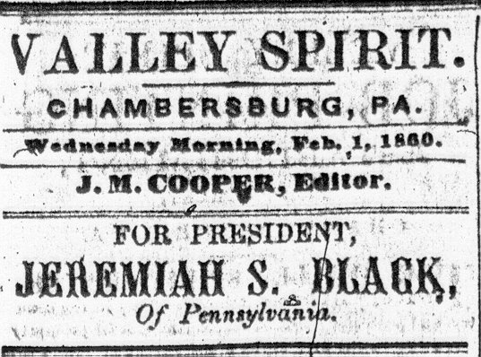

Column 1: Below the date and name of the publisher, the Valley Spirit featured its latest political endorsement. (In February, the paper endorsed the candidacy of Jeremiah Black, a member of the Buchanan administration. The paper changed its endorsement to Northern Democrat Stephen Douglas after the Democratic convention of 1860, only to endorse Southern Democrat John Breckinridge less than two months before the 1860 presidential election.) The endorsement was followed by the lead editorial.  As in many newspapers of the period, this editorial nearly always dealt with a political issue, but it was not necessarily an issue of national significance. The February 1 issue, for example, carried a lead editorial criticizing Franklin County's state representatives for inadequately standing up for the county's interests in the building of railroads.
Columns 2-4: This space was usually filled with articles describing national political affairs: reports from Congress (when in session), activities of prominent national politicians, and political happenings in other states and their legislatures. The Democratic leanings of the Valley Spirit colored its coverage of political news significantly. On February 1, for example, it reported the positive reception of a speech by Stephen Douglas on the floor of the Senate, called a number of Whig congressional representatives from Pennsylvania "hyprocrites [sic]" for their position on the election of the Speaker of the House, and in a number of other articles dealt strictly with the politics of the Democratic party at the state and federal level. Typical of the Valley Spirit's attitude toward the Republican party, when discussing it at all, was an editorial in columns 3-4 excerpted from a paper called the Constitution blasting the Republicans.
Columns 5-6: These columns were also filled with items of national interest, though they tended to discuss activities of legislative bodies far less than those in columns 2-4. More frequently, these articles were similar to the human interest stories that appeared on pages 1 and 2. One significant feature of these columns was that the print was usually smaller than in columns 1-4. This allowed the publishers of the Valley Spirit to cram more information into their paper, but distinguishing the type size of columns 5-6 in this fashion also served to draw the reader's attention to the editorial and political columns of this page.